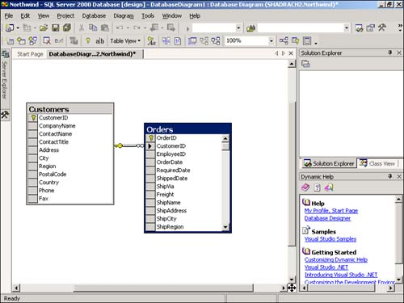
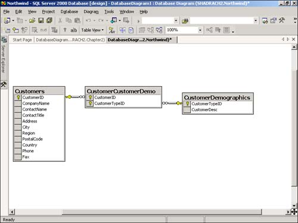
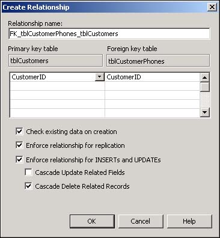

Relationships define how your information needs to "relate" between tables in your database. For example, perhaps you have tables in your database called Customers, Orders, and Order Details as the sample Northwind database does. You would want to create relationships between these tables to make sure that data integrity is maintained as users enter data into the database. Taking this further, you need to make sure that each invoice has an existing customer for every invoice. This is called referential integrity. This How-To shows you how to create relationships as well how to view the relationships by using database diagrams.
You have created a couple of tables where one relies on another to have data in it. In database terms, they are related. How do you create relationships between tables?
Referential integrity tells the database how tables are to relate to one another. You can use referential integrity to help control what data goes in each of tables, based on data in other tables.
To maintain referential integrity, you need to create relationships between tables. An example of referential integrity from Northwind is that to have a record entered into the Orders table, you have to have a record entered into the Customers table. The two tables are related by the CustomerID field, which is found in both two tables. In the Customer table, the CustomerID field is the primary key, which means that it will be unique. In the Orders table, the CustomerID field is a foreign key, which means it points to a primary key in another table. You can see this displayed in the database diagram in Figure 2.6.

Note
Database diagrams are the main graphical way to view, edit, and print relationships. You will find them listed under the database you are working on in the Server Explorer. You can also get the Property Pages for tables from this dialog box and perform the majority of work with regard to interaction between tables, other than structure changes on tables. |
Another purpose of referential integrity and relations is that you also can specify to do the following:
Prohibit a parent record (from table Customers, for example) from being deleted or the key field from being edited if a record exists in the child records (Orders).
If the column relating the tables is updateable, have the system allow the key column to be updated in the parent record, and have the child records reflect the change in the key columns. This is called cascade updates.
Have the child records be deleted if the parent record is deleted. This is called cascade deletes.
Three different types of relationships exist when you're creating the relations between tables:
One-to-many. Used when you have one record in the parent table, with many records in the child table. The Customers/Orders relationship that is displayed in Figure 2.6 is an example of this type of relationship. This is the most common type of relationship. If you look at the join line between the tables in Figure 2.6, you will see a key on the Customers end. This represents the one side, and the infinity symbol by the Orders table represents the many side.
One-to-one. One record in the parent table will have one related record in the child table. An example of this could be if you had private information for customers that you wanted to keep in a separate table. These two tables would have the same primary key column. This relation type is not used often because developers can use views to limit the data to which users have access.
Many-to-many. Records in the parent table can have many related records in the child table, and records in the child table can belong to many records in the parent table. An example of this can also be found in the Northwind database. Customers can have demographics tracked for them. Customers can have many demographic types, and demographic types can be assigned to many customers. This relationship is displayed in Figure 2.7.

Using the Server Explorer, expand the Chapter2 database to see how to create a relationship. It helps to have more than one table. Because you have already created the table called tblCustomers, create the new table called tblCustomerPhones, with the following columns.
|
Column Name |
Data Type |
Length |
Allow Nulls |
Identity |
|---|---|---|---|---|
|
PhoneID |
int |
4 |
Unchecked |
Yes |
|
CustomerID |
int |
4 |
Unchecked |
No |
|
PhoneType |
nvarchar |
50 |
Unchecked |
No |
|
PhoneNumber |
nvarchar |
10 |
Unchecked |
No |
Set the PhoneID as the primary key and save the table as tblCustomerPhones. This table will contain the various phone numbers and types that an individual customer can have. This is an easy way to check out how to create a one-to-many relationship.
Right-click on Database Diagrams in the Chapter2 database tree in the Server Explorer. Choose New Diagram from the menu. The Add Table dialog box will appear.
Hold down the Shift Key and select both tblCustomers and tblCustomerPhones. Click the Add button to add the tables to the diagram, and then click the Close button. You will now see the two tables in the new database diagram.
Place the cursor on the primary key symbol in the CustomerID column of tblCustomers. Hold down the left mouse button and drag and drop the cursor over to the CustomerID column in tblCustomerPhones. The Create Relationships dialog box will be displayed, with the pertinent information filled in for you.
Select the Cascade Delete Related Records; that way, when a customer is deleted, the phone records that have been assigned will also be removed. You can see the final relationship in Figure 2.8. Click OK to accept this relationship.

Creating proper relationships in your database controls how good your data is going to be. The old term "Garbage In, Garbage Out" has meaning in this case. When a user adds information to tables that have relationships set up, he has to enter the data in a certain order. In this case, a user needs to add customers before adding phone information.
If customers are deleted, then the phones that have been assigned to them will be deleted as well.
You will set up your forms in a logical manner based on the way that relationships are set up. For instance, a good way to set up adding your phone numbers to the form would be to use the grid control to display your many phones for one customer.
Another way to enhance this example would be to add another table to hold the phone types and then to link this new table to tblCustomerPhones via a link called PhoneTypeID.
For more examples of relationships, check out the tables and their relationships in Northwind. Create a database diagram, add a table in which you are interested, and then view the related tables.